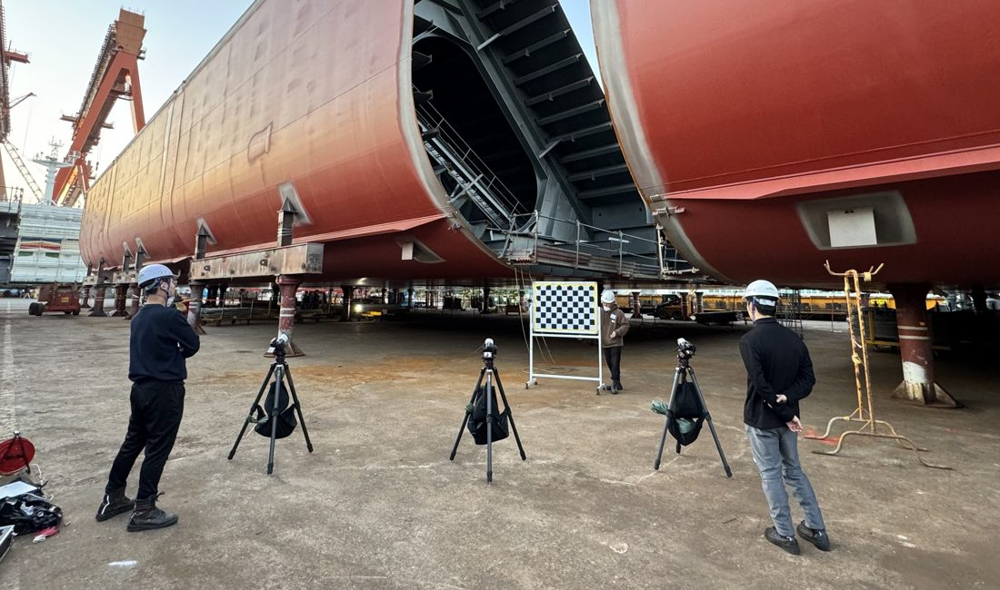
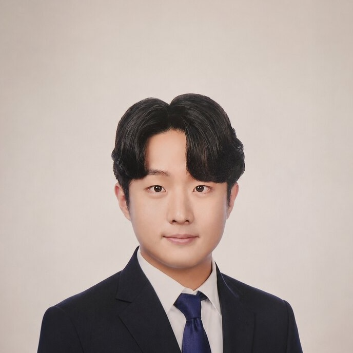

Dohyun Kim
About me
I'm an engineer and researcher working on 3D perception and AI research. I studied mechanical and electrical engineering at KAIST, where I measured ship-scale structures with calibrated stereo cameras. These days at Recon Labs I rebuild real scenes as neural representations and build AI agents that help people create.
What connects all of it: taking a picture, and ending up with something you can trust about the world — a coordinate, a shape, a decision.

01
Projects

02
Experience
Mar. 2024 — Present
AI Researcher
Recon Labs, Seoul
- Researched 3D Gaussian Splatting for a production 3D capture service — reconstruction quality for real-world captures, artifact and floater suppression, background modeling, and rendering optimization.
- Developed virtual try-on features for a fashion service by combining and evaluating multiple generative models.
- Built an AI agent and its orchestration harness for a graph-based generative content platform.
Mar. 2022 — Mar. 2024
Graduate Researcher
HUMAN Laboratory, KAIST, Daejeon
- Developed stereo vision-based measurement workflows for industrial-scale structures — camera calibration and image preprocessing for high-speed, high-precision 3D measurement.
- Built automatic correspondence-point detection using feature keypoints, ROI separation, and co-visible region analysis.
- Contributed signal-processing algorithms and CNN-based extensions for a compact optical 3D sensing platform.
- Worked on RGB-D camera-array positioning and motion recognition for an XR ship-steering training system.
03
Education
Mar. 2022 — Mar. 2024
KAIST
M.S., Mechanical Engineering
- Graduate research on stereo matching, camera geometry, and 3D perception at HUMAN Laboratory.
- Coursework includes: Visual Intelligence, Autonomous Mobile System, Machine Learning for 3D Data, Probability and Statistics.
Mar. 2015 — Jun. 2021
KAIST
B.S., Mechanical Engineering · Double Major in Electrical Engineering
- Foundations across mechanics, circuits, signals, and control — the habit of thinking in systems.
04